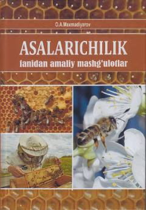

AFAsalarichilik fanidan talabalar uchun mo'ljallangan amaliy uslubiy qo'llanma.
Ushbu uslubiy qo'llanma oliy ta'lim muassasalarining zooinjeneriya yo'nalishi talabalari uchun mo'ljallangan bo'lib, asalarichilikning nazariy va amaliy asoslarini qamrab oladi. Kitobda asalarilarning anatomiyasi, uyalar klassifikatsiyasi, mavsumiy ishlar, asalari kasalliklari va ularni davolash usullari batafsil yoritilgan.